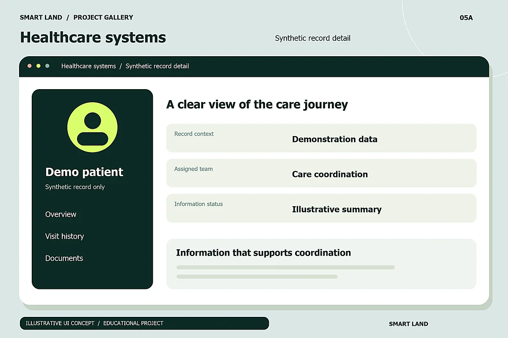
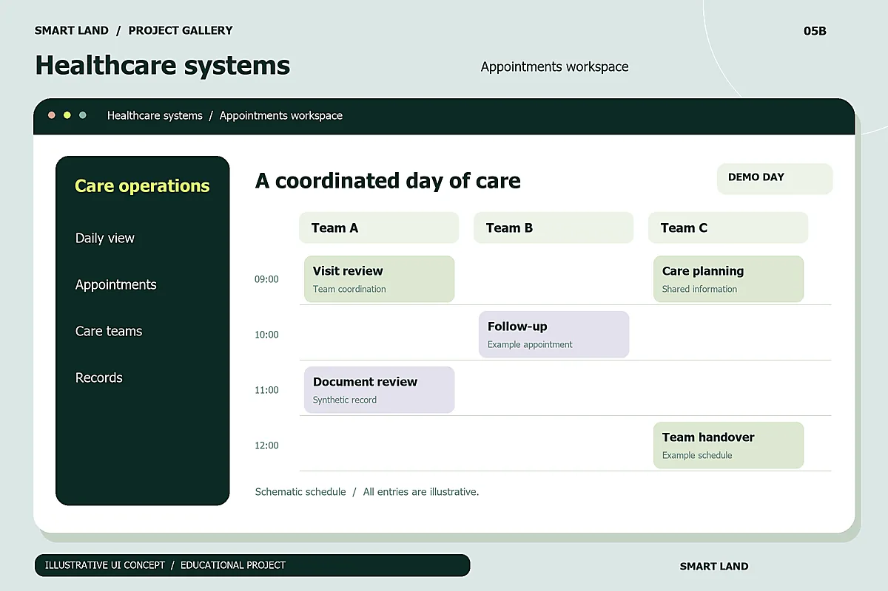

The starting point
The challenge
Hospitals involve many roles and daily tasks. Teams need to organise operational information and follow activity. The challenge is to show each role the relevant information without overwhelming it with detail.
Healthcare / Operations
Organised information. More connected work.
Software concepts supporting connected administrative and service workflows in hospitals.
 Clearer workflows
Clearer workflows01 / Behind the experience
A design interpretation of the project brief,
from the problem to the intended impact.
The starting point
Hospitals involve many roles and daily tasks. Teams need to organise operational information and follow activity. The challenge is to show each role the relevant information without overwhelming it with detail.
The approach
The project brief lists hospital-management systems among Smart Land's solutions. This concept presents a monitoring workspace, appointment organisation and role-based tasks.
The goal
Support connected administration and easier monitoring of operations. This is an administrative system design concept; it does not provide diagnoses or treatment decisions, and uses no real patient data.
02 / Inside the concept
Illustrative design proposals;
They do not document a real commercial product.
A proposed screen summarising tasks, appointments, and the information needed to follow the working day.
A proposed appointment timeline that helps the team read the schedule and review details.
Role-focused interfaces that highlight the need for appropriate access permissions.
03 / A visual tour
Three fictional design views.
Select an image to view it at full size.
An educational concept for a hospital operations dashboard.

An example of organising administrative information and everyday tasks.

A concept view of scheduling operations and coordinating teams.
All screens, content, and data shown are illustrative designs created for this educational project.
04 / The user journey
An illustrative scenario explaining how the experience could work. The interfaces are visual concepts, rather than an application running within this page.
The employee opens the workspace appropriate to their role in the model.
They review relevant administrative information and identify the next task.
They record an update in the conceptual scenario so the team can stay informed.
05 / The idea in motion
This film introduces the portfolio's five projects. The scene for Hospital management systems at second 20, followed by the rest of the portfolio tour.
Original music and synchronised Arabic text. Adjust audio and display size with the player controls.
SMART LAND / PORTFOLIO FILMPortfolio tour
Smart Signal: more inclusive communication through sign-language translation. MyKey: a place to discover property and vehicle listings. Sada: learning beyond distance. Welcome: a multi-store shopping experience. Hospital management systems: organised information and connected workflows.
06 / Keep exploring
Every idea has a beginning